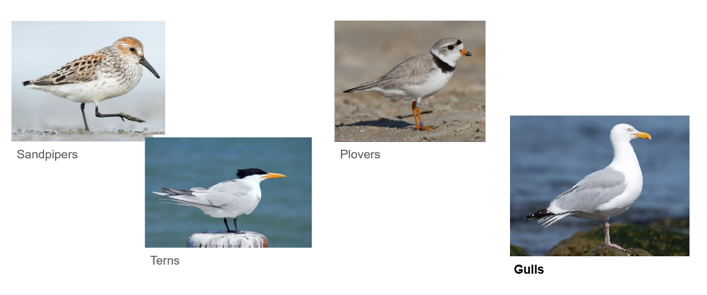
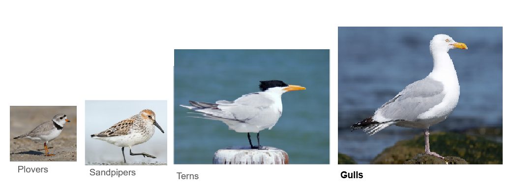
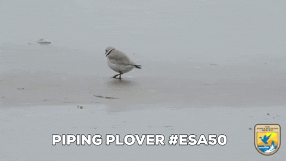
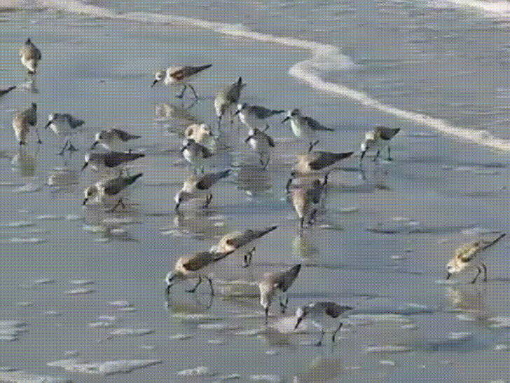
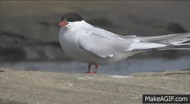
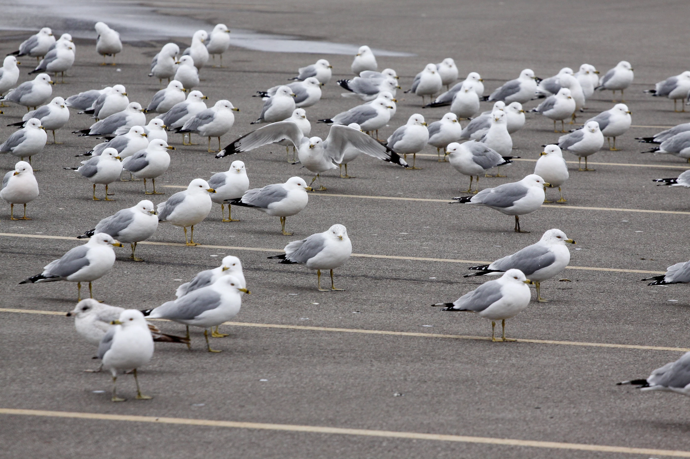

Shorebirds... and more!
What makes a gull a gull?
Before we can jump into identifying the different species of gulls present in Chicago, we have to first know... What exactly is a gull?
The shorelines of Chicago are rich with shorebirds of all kinds, so it's important for us to know on a general scale what we're looking at. But don't worry! It's much easier than you might expect.
Don't worry too much about the details here! We just want to make sure you can pick a gull out of a crowd of birds.
Here's three of the most common shorebirds you might see at a beach in Chicago alongside gulls.

When you look at shorebirds individually in pictures, they can seem quite similar at a glance. But what if I re-arranged this visual by scale of their actual size?

It becomes a little easier! From there you can get familiar with their overall shape. But let's break it down further, just so you can be sure.
Plovers
Plovers are what I like to call the chicken nuggets of the beaches of Montrose. They're small, round-headed, and love to scurry across the beach. They have to stay on the move to keep from being scooped up by predators.
Shape: Small, short-billed, round-bodied with a flat-topped head.
Color: Sand colored to blend in with their surroundings.
Behavior: Twitchy, almost nervous. Seen pecking with their short beak along the shore to feed.

Sandpipers
Sandpipers often occur in groups of 2 or more. They have comically large bills compared to their body size because, true to their namesake... they love to pipe through sand!
Shape: Small, long-billed, round-bodied and round-headed.
Color: Sand colored to blend in with their surroundings, often with distinctly dark spots or streaking.
Behavior: Scurrying almost constantly. Seen "piping" their beaks into the sand to feed.

Terns
Terns are the most similar to gulls at a glance. However, they have much sleeker bodies and almost never extend their necks, making them look longer rather than taller.
Shape: Long, sleek and sharp birds with a black cap.
Color: White, grey and black, very similar to gulls.
Behavior: Will sit similarly to gulls, but tend to look around more often and almost never extend their necks while standing or sitting.

Gulls
The star of our show! The largest of the shorebirds in Chicago by far, these lads will group in large quantities across the city.
Shape: Large and tall, with plump round bodies and long black tails.
Color: Typically white with some amounts of grey and black.
Behavior: Content to sit or stand in large groups, but sometimes can be seen playing with sticks or trash!
